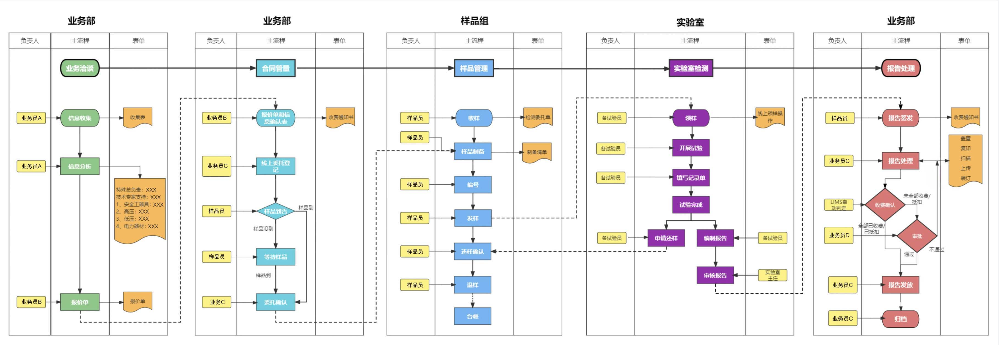

| 委托编号 | 客户单位 | 样品名称 | 检测类别 | 登记日期 | 状态 |
|---|
单位：万元。按委托受理日期归月、按「任务类型」分组，金额取该月委托的样品检测总价合计； 字典里存在但当年没有委托的分类仍画出来（值为 0），总量线为各分类合计。

五条泳道依次为 业务部（洽谈报价）→ 业务部（合同与委托登记）→ 样品组 → 实验室 → 业务部（报告与交付），每条泳道三列「负责人 / 主流程 / 表单」； 首行为跨部门主线（业务洽谈 → 合同管理 → 样品管理 → 实验室检测 → 报告处理），黄色小块是负责人、橙色是表单单据、虚线为回退路径。